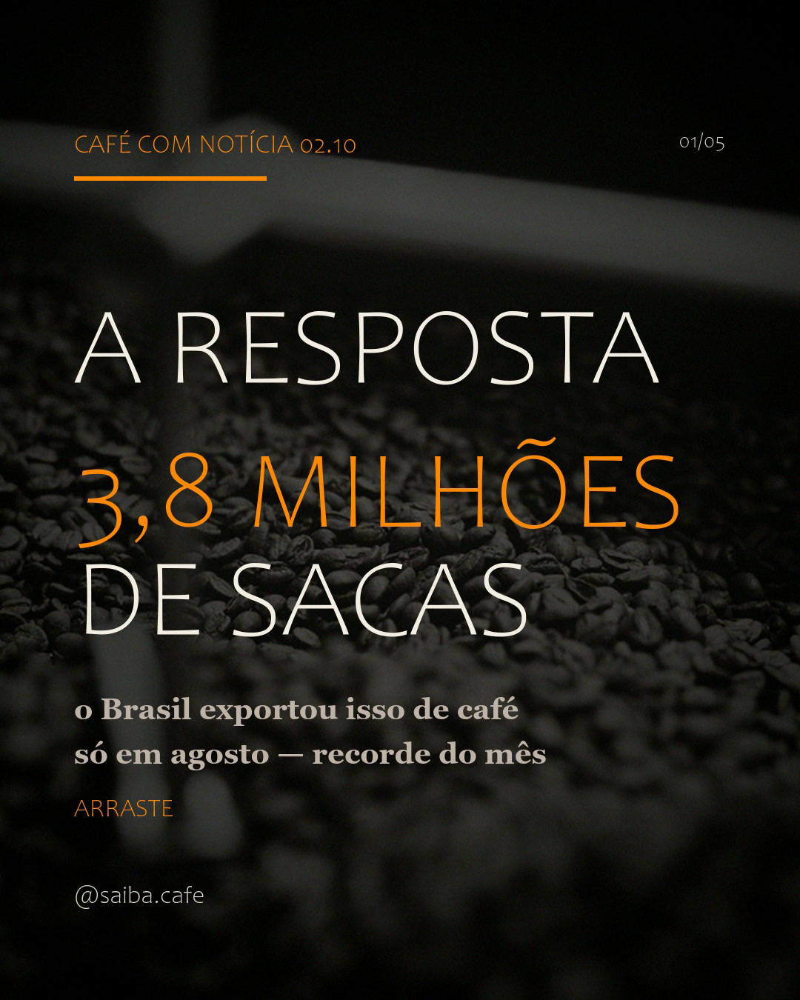

A resposta: 3,8M de sacas
o Brasil exportou 3,8 milhões de sacas de café só em agosto, recorde do mês e alta de 43,2%. a versão longa explica as três janelas de números.
ler a matéria →
blog · além dos 07h30
as versões longas das notícias e curiosidades do Instagram: números completos, contexto e fontes clicáveis.
NY: recua após 3 altas seguidas · Cepea/Esalq R$ 1.577,42 por saca (01.10)
as postagens
filtro por tipo · tudo que sai no IG ganha casa aqui.
o Brasil exportou 3,8 milhões de sacas de café só em agosto, recorde do mês e alta de 43,2%. a versão longa explica as três janelas de números.
ler a matéria →
a arábica domina o mapa do café brasileiro, e o conilon ganha terra devagar. o retrato por região está no post.
ver post ↗a opinião da casa sobre por que o pacote não barateia: a política de preço explica menos que o estoque baixo e o dólar.
ver post ↗sem sair do mapa: o estado é o segundo maior produtor do país e responde por 25% das sacas nacionais.
ver post ↗um estudo de microbioma colocou o café no topo da lista; o que a ciência mostra, e o que ainda não sabe.
ver post ↗o USDA projeta 71,9M de sacas para o ano-cafeiro; o preço cai devagar, e a fila de navios explica o resto.
ver post ↗a safra recorde da série confirmada em 24.09, com alta de 19,6%.
ver post ↗250 lojas fechadas; o que o corte diz do consumo fora de casa.
ver post ↗US$ 1 milhão para genética e sustentabilidade do café.
ver post ↗a previsão do ciclo 2026/27 sustenta preços e ameaça a próxima safra; o clima é o que move o preço daqui em diante.
ver post ↗por que a lavoura produz mais num ano e menos no outro.
ver post ↗o país do chá bate recorde de consumo de café; a virada do hábito, em números.
ver post ↗55 gramas por litro: a conta que tira o achismo da extração.
ver post ↗por que a safra recorde ainda não chegou ao balcão: janelas, estoques e paciência, na opinião da casa.
ver post ↗datas "set. 2026" = posts do cofre produzidos em 27.09; as artes e legendas completas ficam no cofre de conteúdo.